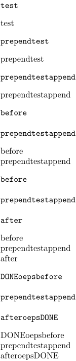

Contents
Summary
The instances of \getbuffer are used for typesetting named buffer class contents.
Description
Fetches the content of a buffer class defined by
\definebuffer
to be typeset.
Examples
Combine buffers
One can combine buffers:
+ : nothing in between ++ : space in between +++ : empty line in between
\startbuffer[test] test \stopbuffer \startbuffer[oeps] oeps \stopbuffer \typebuffer[test] \getbuffer[test] \startbuffer[test = * + test] prepend \stopbuffer \typebuffer[test] \getbuffer[test] \startbuffer[test = test + *] append \stopbuffer \typebuffer[test] \getbuffer[test] \startbuffer[test = * +++ test] before \stopbuffer \typebuffer[test] \getbuffer[test] \startbuffer[test = test +++ *] after \stopbuffer \typebuffer[test] \getbuffer[test] \startbuffer[test = * + oeps + test + oeps + * ] DONE \stopbuffer \typebuffer[test] \getbuffer[test]
- 